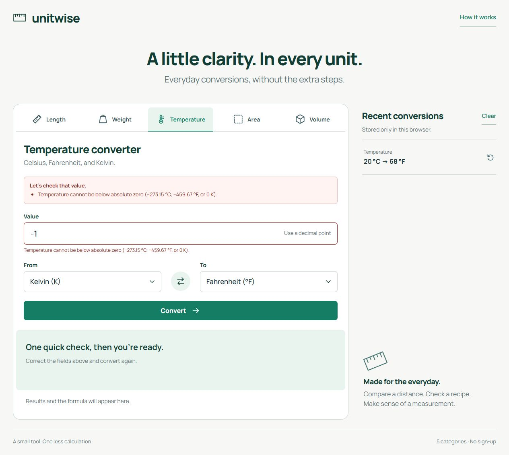

Sonucun yanında,
hesabın bağlamı.
Bir birim dönüştürücü yalnızca sayı üretmemeli. Kullanılan ölçü birimi, dönüşüm formülü ve gösterimdeki yuvarlama da anlaşılır olmalı. Hatalı bir değer girildiğinde kullanıcı hangi alanı düzeltmesi gerektiğini görebilmeli.
Unitwise bu ihtiyacı beş dönüşüm kategorisiyle ele alıyor. Web formu ile JSON API'nin farklı hesaplama kuralları geliştirmesini önlemek için sayısal işlemler ve doğrulama tek bir serviste toplanıyor.
İki giriş noktası,
ortak kurallar.
Razor Pages formu sunucuda işleniyor. Minimal API aynı yeteneği programatik istemcilere açıyor. Her ikisi de durumsuz ConversionService sınıfını çağırıyor; aralarında bir HTTP çağrısı veya ayrı hesaplama katmanı bulunmuyor.
- Form veya JSONRazor Pages ve Minimal API, isteği ortak servise iletir.
- ConversionServiceGirdi, birim ve aralık doğrulamasını; hesabı ve sonuç gösterimini yürütür.
- UnitCatalogBeş kategorinin birimlerini, katsayılarını ve varsayılanlarını tanımlar.
JavaScript hesaplama yapmıyor. Formu arka planda gönderip sunucunun ürettiği paneli güncelliyor. Son beş başarılı dönüşümün geçmişi tarayıcıda tutuluyor; bu özellik için sunucuda veri tabanı gerekmiyor.
Küçük araçta,
belirgin tercihler.
Rasyonel ara hesaplar
Dönüşüm katsayıları, BigInteger tabanlı rasyonel işlemlerle son decimal sonuca kadar korunuyor. Böylece ara işlemin taşması, temsil edilebilir bir sonucun hesaplanmasını engellemiyor.
Hesap ve gösterim ayrı
Varsayılan gösterim altı ondalık basamağa yuvarlanıyor. Küçük sıfır olmayan sonuçlarda bilimsel gösterim kullanılıyor; yuvarlama değeri değiştirdiğinde yaklaşık işareti gösteriliyor.
JSON'da sayısal metinler
value ve inputValue alanları string olarak dönüyor. Bu tercih, JavaScript istemcilerinde ondalık basamak kaybını önlemeyi amaçlıyor. formattedValue ise sunum metnini taşıyor.
Temel akış bağımsız
Form, JavaScript kapalıyken de sunucuya gönderilebiliyor. Geçmiş, kopyalama ve arka plan güncellemesi ek özellikler olarak kalıyor. Tarayıcı depolaması kullanılamadığında geçmiş o ziyaretle sınırlanıyor.
Başarılı sonuç ve
geçersiz girdi.
Aşağıdaki görüntüler canlı uygulamadaki gerçek form işlemlerini gösteriyor. Görselleri tam boyutuyla açmak için üzerlerine tıklayabilirsin.


Kuralları ve
giriş noktalarını sınamak.
xUnit testleri referans dönüşümleri, katalogdaki birim çiftlerinin gidiş-dönüş davranışını, sıcaklık sınırlarını, kültürden bağımsız sayı ayrıştırmayı ve taşma durumlarını kapsıyor. HTTP entegrasyon testleri ise API sözleşmesini, doğrulama yanıtlarını, yerel form gönderimini ve antiforgery korumasını kontrol ediyor.
GitHub Actions; Release derlemesi, testler ve kapsam raporundan sonra Docker imajını oluşturup non-root kullanıcıyla temel çalışma kontrolü yapıyor. Kaynak sürümüne ait CI kaydı aşağıda incelenebilir.
Kontrol edilen davranış: Canlı uygulamada 20 °C girdisi 68 °F sonucunu ve formülünü gösteriyor. −1 K girdisi ise alanla ilişkili bir doğrulama hatası üretiyor; geçerli bir dönüşüm sonucu sunulmuyor.
Sınırları açık
bir dönüşüm aracı.
Sonuç aralığı .NET decimal türüyle sınırlı. Temsil edilemeyen çok büyük veya çok küçük sonuçlar doğrulama hatası üretiyor. Girdiler nokta ondalık ayırıcıyla, gruplama işareti olmadan kabul ediliyor; bilimsel gösterim de destekleniyor.
“Weight” kategorisi kütleyi ifade ediyor; hacimdeki cup ve gallon birimleri US ölçüsü olarak etiketleniyor. Para birimi dönüşümü, hesap sistemi ve sunucuda geçmiş saklama bu projenin kapsamında bulunmuyor. Canlı demo, barındırma hizmetinin uyku durumundan çıkarken ilk açılışta bekletebilir.